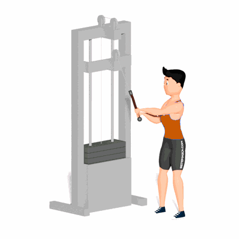

Abdominal Lenhador

É um exercício que trabalha os músculos do abdômen, em especial os oblíquos externo e interno.
Ficha Técnica
Tipo: Musculação
Grupo Muscular: Abdome
Aparelho: Nenhum
Músculos: Nenhum
Como realizar
- Anexe um puxador à posição alta de um aparelho de cabo ajustável;
- Fique em pé, próximo ao aparelho com seus pés alinhados com os ombros;
- Estenda os braços para cima e segure o puxador com as duas mãos sobre um dos ombros;
- Com os braços completamente estendidos, traga o puxador para baixo, cruzando seu corpo em direção ao lado oposto;
- Permita que seus quadris e tronco girem e mantenha seus joelhos ligeiramente flexionados;
- Lentamente inverta o movimento para retornar à posição inicial.
 RC STORE
RC STORE